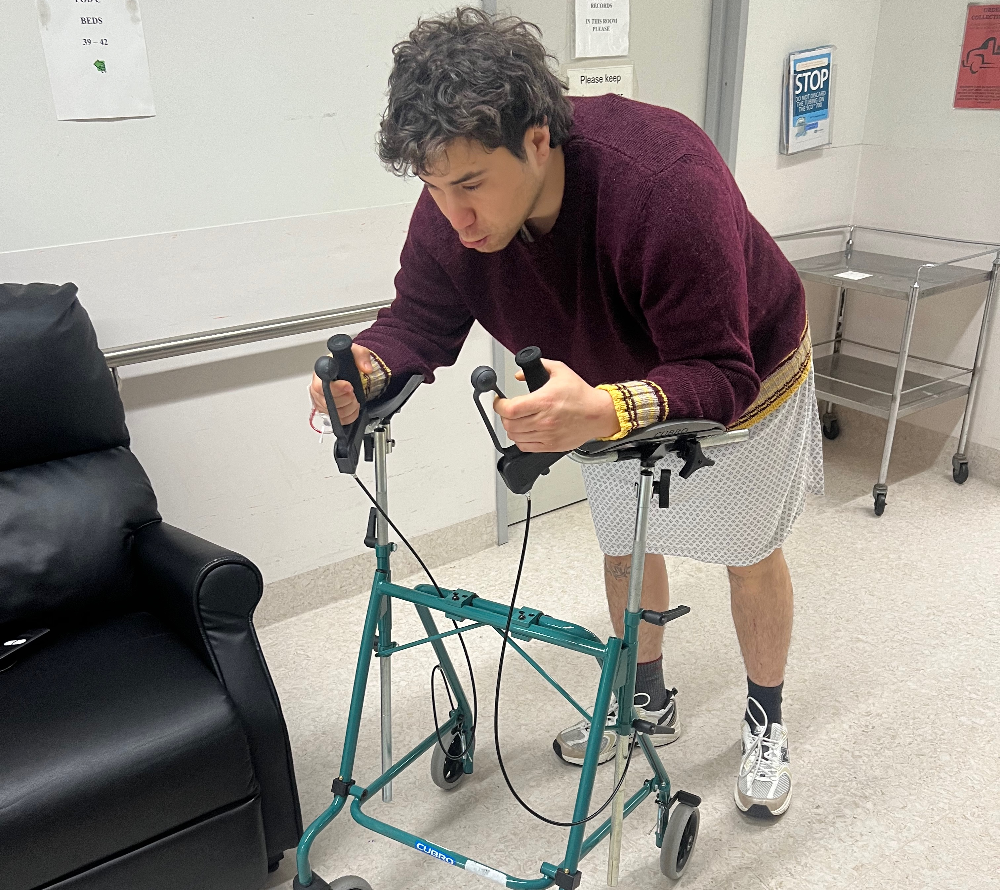
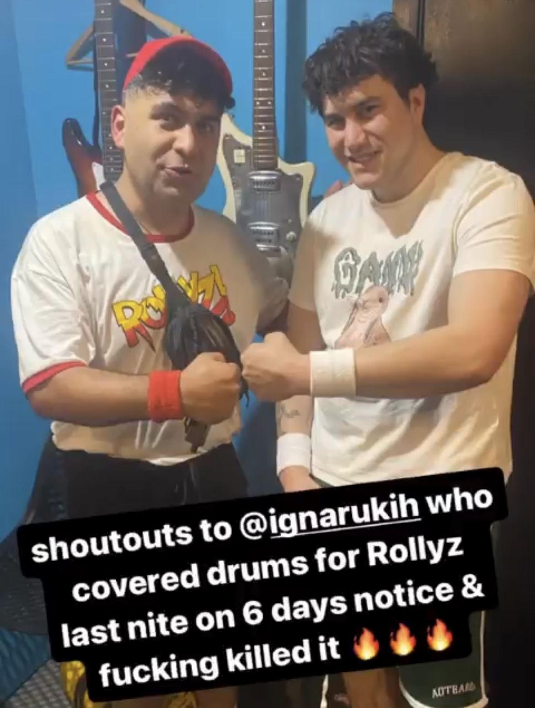
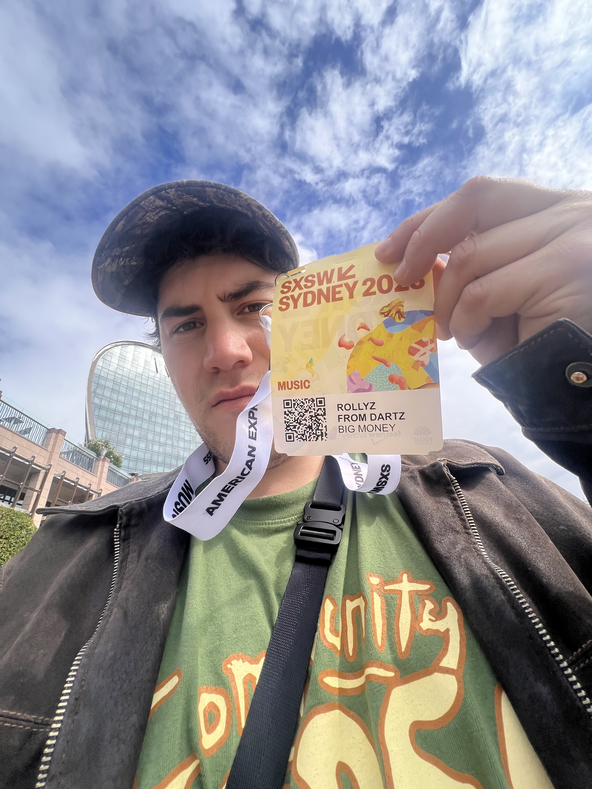

Identity and Values
Explain a situation where you have made an ethical decision. Discuss how you weighed up the values involved in that decision, the decision you made, and how you reflect on the decision now.
I play drums in a band that has reasonable success. In october 2023 we had planned a gig at the venue meow to fundraise our travel over to Australia to play SXSW Sydney (music conference), and a compounded national tour. We hadn’t played a gig in quite some months, and the show was imperative to support us financially in our upcoming travels. (Ticket sales merchandising make up this bulk).
A week out from the show, I started to get an immense pain in my stomach, and it turned out my appendix nearly exploded and had to go into emergency surgery that day. Dozily coming out of lapriscopic, I asked the doctors what sort of physical activity I could manage post surgery, they made it very clear that I’d need two weeks minimum before I could lift anything or explicitively play drums. Immediately I was devastated, this show was very important to me, it was sold out and we had new songs I was proud of to perform.
First thing after thinking it over was discuss it with my band mates. We needed this gig, It would be tricky to balance the months ahead without this gig, but playing the drums prematurely could set my injuries back further, taking away our oppurtunities to travel overseas, tour and network at the conference. Each member of the band was adamant that we would cancel the gig as they knew how important it was to me, I had begrudgingly suggested we find a fill in, but no one seemed too keen on the idea.
My ego was in the way, I cared so much about the product and my own input that I was willing to pull the group back, an they were fine with this but after some deliberation, and a second meeting, I decided to search for a fill-in drummer with only a few days from the show. It might not seem like a lot but a younger me wouldv’e thrown care to the wind and played the show regardless, serving my ego and perhaps undoing the stitches in my abdomen. From bed I organised and called upon a close friend of mine, local drummer Hikurangi Proposed an offer of pay, outlined the desired product, (setlist, songs, practice times, venue time…) and wrote him out some basic charts of the songs. With only a few days till the show we pulled it off. I attended the few practices that week before the weekend show, and gave pointers on the songs hepled with any confusion, and suggested alternative playings to sections that didnt translate to his style. The gig went off without a hitch, we put on an amazing show, and a delicious free sausage sizzle (hosted by yours truly) and Hikurangi did an amazing job at the parts.
Here is my reflection, I can say with embarsing honesty that I was afraid that he would be better or id be replaced, or that he wouldnt play it right, or that my pride would stop me from allowing the band to succeed. Im so glad I made the decision I did because it allowed me the rest I needed to play a 2 week long tour in AUS (my bandmates had to carry everything hehehe) and it allowed to further our financial goals. In Australia we met so many other bands, touring managers, labels andd friends. This also strengthened our group, knowing where our core values are, and that when something goes wrong with one of us, we communicate and find a solution without judgement. It has taught me to be careful of my ego, I am extremely passionite about things I have created, no matter how simple. My sense of ownership can be very strong to a point of harm.
Describe how your culture and the people around you have influenced your values and identity.
I was born in an extremely small town called Ruatoki, set against the misty Urewera where I later worked as DOC rangere in the bay of plenty. I am half Maori and half danish so growing up I was always part of Kura kaupapa Māori, kapa haka and life on the marae. Being Māori is an extremely important part of my identity, and I try and support and bring it with me into everything I do. I have an internal need for community and family, after moving to wellington to study music (BCCOM), it was hard at first to create this, but over 8 years in wellington, I have managed to create the community I have sought after. Both as a community in music of producers engineers composers and musicians alike as well as my maori whanau here in wellington that we have organised, hosting matariki dinners, attenining Te reo maori courses etc. I need people to inspire me, collaboration is for me an incredibly powerful driving force of creation, working with so many musicians and creatives over my time in wellington has helped me to hone my creativity and communication skills.

my strengths are curiosity, kindness and creativity, I know that I can leverage these strengths in a collaborative situation and exceed in directing a group towards an agreed outcome. Ego in a studio setting is often an unavoidable occurrence, but having the ability to mediate and support your peers by finding common grounds, compromises and sometimes jsut outright justifiable logic can be imperative to a successful working condition. I am not always entirely self-motivated and I know this is a weakness in myself as I tend to excel in teams.
My creativity, finding unique solutions to problems and experimenting with new ideas are my core strengths., new ideas excite me and they should excite you! I often find myself writing new ideas for media releases artwork schemes and songs during the day into my notes app. I hope to bring this energy to the rest of the course and Cohort.
Evaluate your limitations in terms of your learning and career development. How might these affect your learning journey?s
Like many of us in this course I have ADHD, focus and pereserverancee can often be a struggle for me, I find subjects that I have a natural interest in, extremely compelling and capable of hyper focussing on for long periods of time, I can struggle to face tasks that I find boring even though I know that many of these will occur during my courier in tech. I am often a perfectionist letting deadlines get ahead of me because a product is not up to my liking, a self sabotaging experience often leads me to turmoil. I have gotten better and better at this as ive aged, but know this is something I will havee to hone in on during the duration of this course, and think it will be a good opportunity to practice, as the challenges specific to Dev Academy follow the structure and setting of a real working environment.
I am also yet to work in an office type environment, during my life I have pursued mostly physical and technical work. I have eexpereince in conservation, working for DOC, Cooking across multiple restaurants, and trades, building/painting/flooring. I am known for jumping from subject to subject and always pursuing new things to learn. I am committing my time entirely to dev academy and to furthering my access to the tech industry.